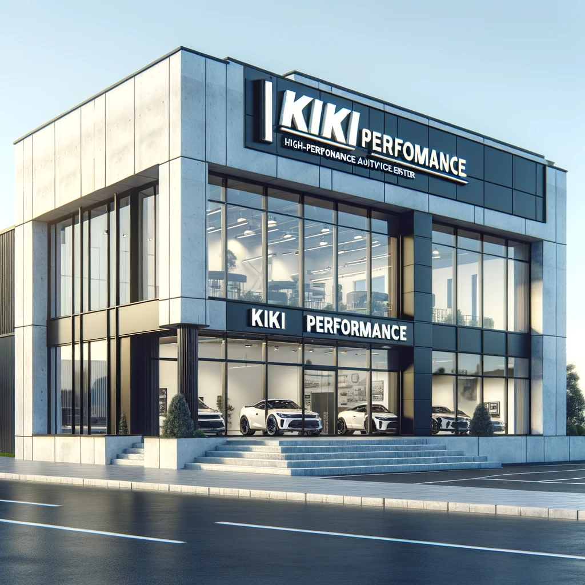

Dobrodošli v KIKI PERFORMANCE
Naša ekipa pri KIKI PERFORMANCE je predana zagotavljanju vrhunske storitve in izboljševanju zmogljivosti vašega vozila. Naše podjetje se nahaja na Kolodvorski ulici 15 v Ljubljani.
Specializirani smo za:
- Čip tuning za povečanje moči motorja
- Servis in popravilo ročnih in avtomatskih menjalnikov
- Menjava in optimizacija turbinskih polnilnikov
- Diagnostika in odpravljanje napak na motorjih
- Redno vzdrževanje in servisiranje vozil
Naša misija je zagotoviti, da vsak avtomobil, ki zapusti našo delavnico, deluje bolje, hitreje in bolj zanesljivo. Uporabljamo najnovejšo tehnologijo in najboljše materiale, da izpolnimo in presežemo pričakovanja naših strank.
Ne odlašajte – kontaktirajte nas še danes in poskrbite za optimalno zmogljivost vašega vozila!
040 570 269 Kristjan Košir
